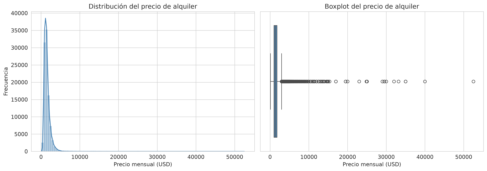
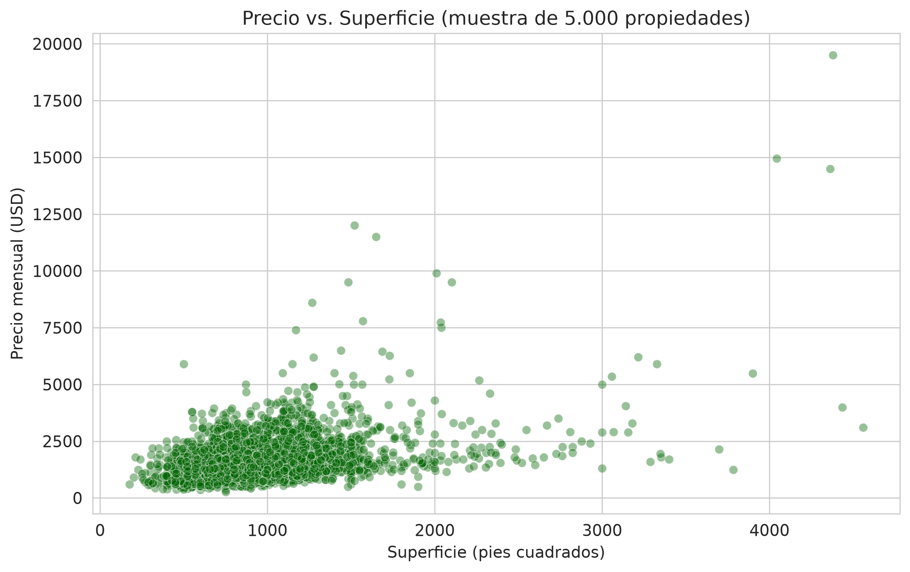
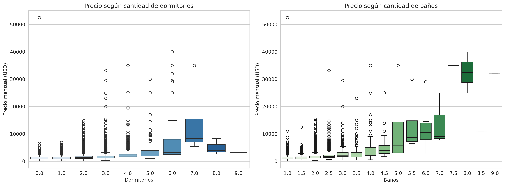
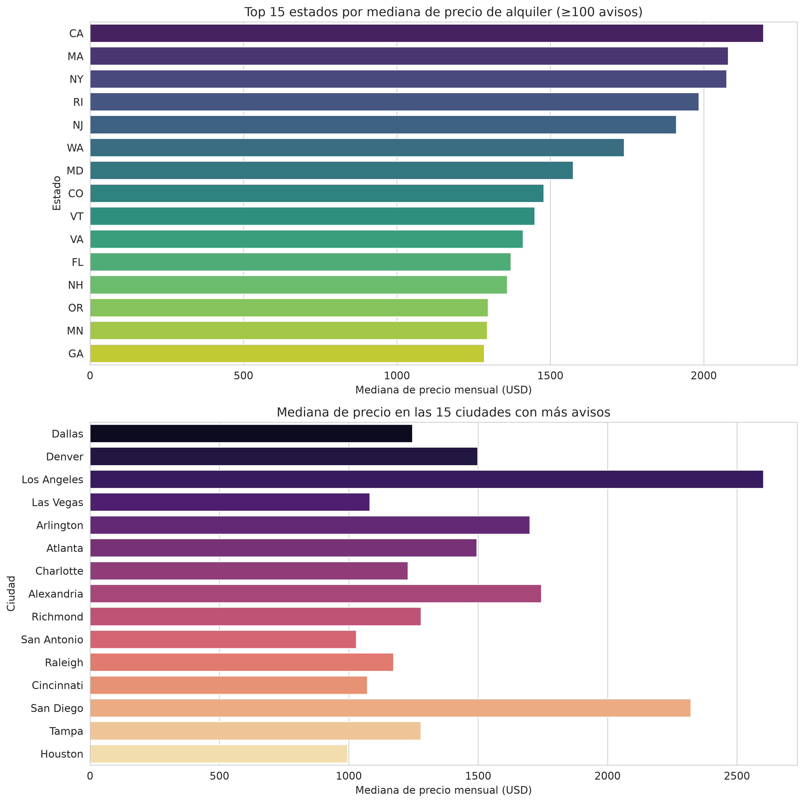
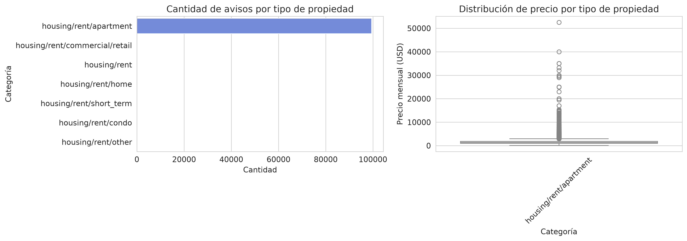
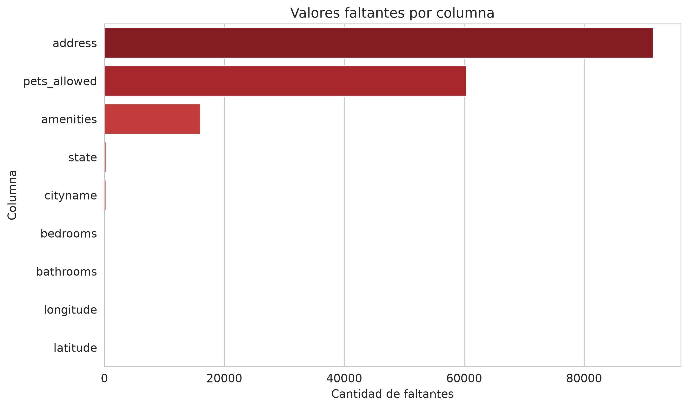
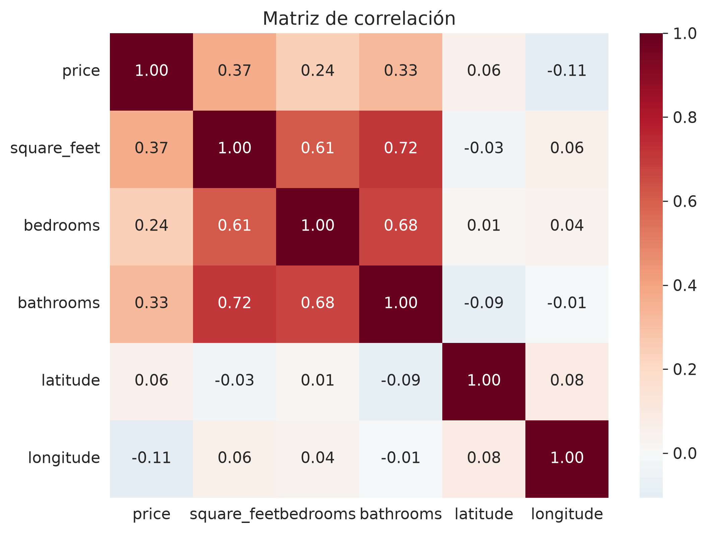
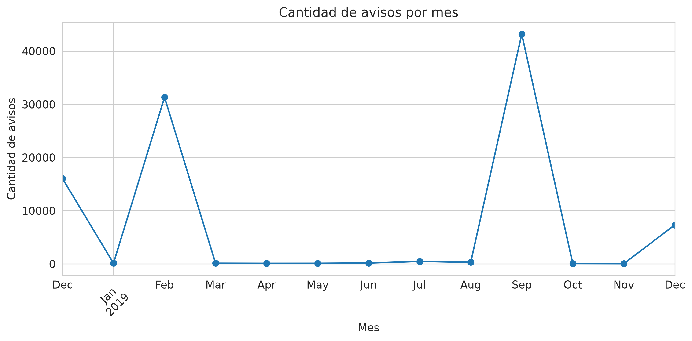

Estimación de precios de alquiler
para propietarios independientes
Aprendizaje Automático — 2026 Q1
Trabajo Práctico Final — Entrega 1
Dataset: UCI Apartment for Rent Classified (~100K registros)
El problema
¿Cuánto debería cobrar de alquiler por mi propiedad?
- Si el precio es muy alto → la propiedad se queda vacía.
- Si el precio es muy bajo → se pierde ingreso mensual.
- Es una decisión con alto impacto económico y poca información clara.
Queremos mejorar la decisión de precio de listado inicial de una propiedad.
¿Qué hacen hoy los propietarios?
- Comparables manuales: buscar anuncios similares en portales. Lento y subjetivo.
- Inmobiliarias / agentes: cobran comisión y pueden sesgar la tasación.
- Estimadores genéricos: no siempre reflejan el nicho o la micro-ubicación.
Nuestra propuesta
Un modelo de Machine Learning que, a partir de características básicas de la propiedad y su ubicación, estime un precio de alquiler mensual de referencia.
- Usuario: propietarios independientes, pequeños inversores o plataformas de alquiler.
- Uso: soporte de decisión, no reemplaza al propietario.
- Valor: reducir dependencia de intermediarios y dar un número objetivo para negociar.
El dataset
- Fuente: UCI Machine Learning Repository.
- Tamaño: ~99.500 avisos de alquiler en EE.UU.
- Variables: 22 columnas.
- Target:
price (precio mensual en USD).
- Features principales: superficie, dormitorios, baños, ciudad, estado, coordenadas, amenities, tipo de propiedad.
¿Por qué estos datos sirven?
| Variable | Relevancia |
|---|
price | Variable objetivo. |
square_feet | Principal determinante del precio. |
bedrooms / bathrooms | Características estructurales clave. |
cityname / state / lat / lon | Ubicación es el factor más influyente. |
amenities | Comodidades que agregan valor. |
category | Tipo de propiedad. |
Distribución del precio de alquiler

La distribución es asimétrica y presenta outliers significativos.
Outliers detectados
- Precios extremos: desde USD 100 hasta USD 52.500 mensuales.
- Superficies extremas: desde 101 hasta 50.000 pies cuadrados.
- Según el criterio del IQR, ~8% de los precios son outliers.
- Decisión pendiente: ¿eliminar, capar o modelar por separado?
Precio vs. Superficie

Correlación positiva, aunque con alta dispersión y valores extremos.
Precio según dormitorios y baños

A mayor cantidad de dormitorios/baños, mayor mediana de precio.
El precio depende fuertemente de la ubicación

Diferencias importantes entre estados y entre las principales ciudades.
Distribución por tipo de propiedad

Predominan apartamentos, pero también hay casas, condos y otras categorías.
Valores faltantes

Destacan address, pets_allowed y amenities. Requieren estrategia de imputación.
Correlaciones entre variables numéricas

La superficie es la variable numérica más correlacionada con el precio.
Distribución temporal de los avisos

Los datos corresponden principalmente a 2019. Limitación importante para uso actual.
Limitaciones del dataset
- Antigüedad: datos de 2019; no reflejan inflación ni cambios post-pandemia.
- Sesgo geográfico: ciudades grandes y ciertos estados están sobrerrepresentados.
- Fuentes específicas: principalmente RentLingo y RentDigs.com.
- Factores no observados: estado de conservación, regulaciones locales, temporada.
- Outliers y faltantes: requieren tratamiento cuidadoso en el pipeline.
Próximos pasos (Entrega 2)
- Limpieza y preparación final (imputación, tratamiento de outliers, encoding).
- Separación en entrenamiento / validación / test.
- Baseline: regresión lineal o mediana por ubicación.
- Modelos: Random Forest, Gradient Boosting (XGBoost/LightGBM).
- Métricas: MAE, RMSE, MAPE.
- Análisis de errores e interpretación (SHAP, importancia de features).
- Discusión de uso real, riesgos y monitoreo.
Conclusiones
- El problema es real y el dataset es adecuado para un prototipo.
- Superficie, ubicación y habitaciones son los principales predictores.
- Hay que comunicar claramente las limitaciones antes de usarlo en producción.
- El modelo debe usarse como soporte de decisión, no como precio final.
¿Preguntas?